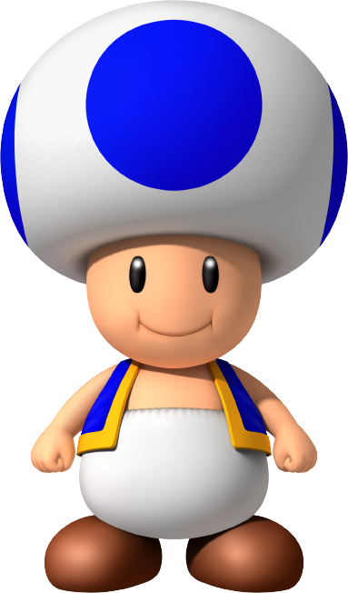

Mario
Mario é um personagem fictício da franquia e série de jogos eletrônicos Mario da Nintendo, criado pelo desenvolvedor e designer de jogos eletrônicos japonês Shigeru Miyamoto. Servindo como mascote da Nintendo e protagonista homônimo da série, Mario já apareceu em mais de 200 jogos desde sua criação. Mario é retratado como um encanador italiano baixinho rechonchudo e bigodudo vindo do Brooklyn que reside no Reino dos Cogumelos. Ele repetidamente tem a missão de resgatar a Princesa Peach do vilão Bowser, e impedir seus diversos planos de destruir e dominar o reino. Mario também tem outros inimigos ou rivais, incluindo Donkey Kong e Wario. Desde 1995, Mario é dublado por Charles Martinet.
Fonte: https://pt.wikipedia.org/wiki/Mario_(personagem)Luigi
Luigi é um personagem fictício de videogames produzido pela Nintendo. Criado pelo designer de jogos Shigeru Miyamoto, Luigi é irmão do Mario e é um dos mascotes da série, ele é o seu companheiro em vários jogos. A primeira aparição de Luigi se deu no jogo Mario Bros. em 1983, como personagem controlado pelo segundo jogador. Ele manteve esse papel em Super Mario Bros., Super Mario Bros. 3, Super Mario World e outros títulos. O primeiro jogo em que estrelou como personagem primário foi Super Mario Bros. 2. Luigi protagonizou o jogo educativo Mario is Missing!, e mais tarde repetiu o papel em Luigi's Mansion, jogo lançado para o Gamecube em 2001. Nos dois jogos, é colocado no papel de herói porque Mario, o protagonista normal da franquia, precisa ser salvo. No jogo Super Mario RPG descobre-se que o maior sonho de Luigi é se tornar um encanador tão bom quanto seu irmão.
Fonte: https://pt.wikipedia.org/wiki/Luigi_(personagem)Princesa Peach
Princesa Peach Cogumelo (mais conhecida apenas como Peach, e antigamente como Princesa Cogumelo) é uma personagem principal na franquia Mario, e a princesa do Reino dos Cogumelos. A Peach apareceu pela primeira vez no jogo Super Mario Bros., sendo criada pelo Shigeru Miyamoto para ser a donzela em perigo no jogo, e isso se continuou depois disso. Ela reside em seu castelo junto de vários Toads, que agem como seus leais súditos. Seu reino é frequentemente atacado pela Tropa Koopa, uma tropa liderada pelo Bowser. Ela é o interesse amoroso do super Mario.
Fonte: https://mario.fandom.com/pt/wiki/Princesa_PeachBlue Toad
Blue Toad fez sua primeira aparição em New Super Mario Bros. Wii como um ajudante jogável de Mario, junto com Luigi e Yellow Toad. Blue Toad e Yellow Toad reprisam seus papéis como personagens jogáveis em New Super Mario Bros. U, e também apareceram em vários outros jogos.
Fonte: https://www.mariowiki.com/Blue_Toad_(character)Rei Bowser Koopa
.png)
O Rei Bowser Koopa, conhecido no Japão como Koopa, ou somente Bowser, é o principal vilão do universo Mario, consagrada franquia da Nintendo, e também um dos mais famosos vilões da empresa. Ele é o rei de todos os Koopas (uma espécie similar a tartarugas super desenvolvidas) e também o líder da organização criminosa conhecida como Koopa Troop, uma organização composta por diversas criaturas do Reino dos Koopas.
Fonte: https://pt.wikipedia.org/wiki/Bowser